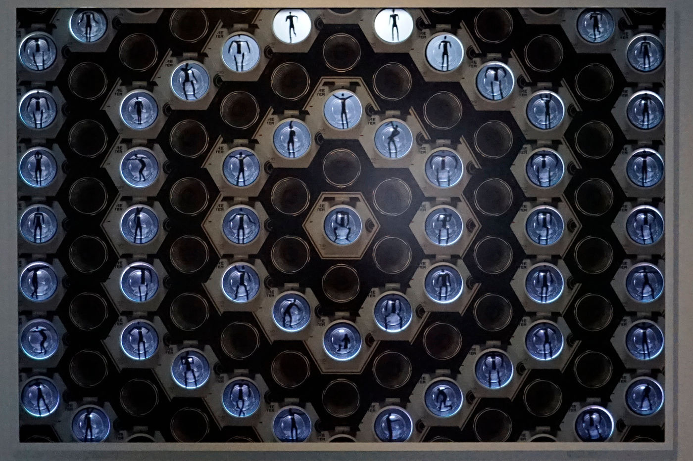
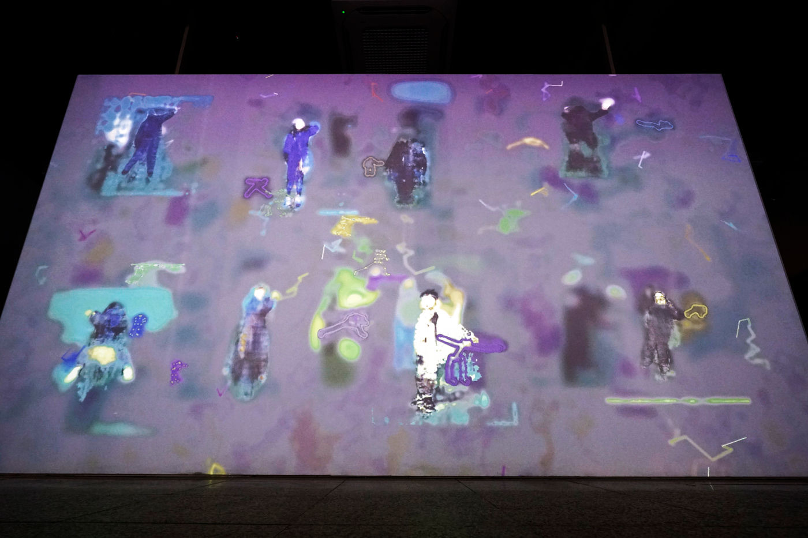
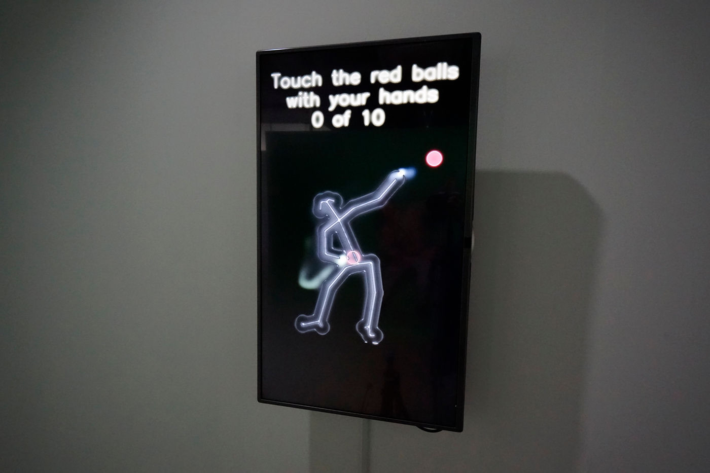
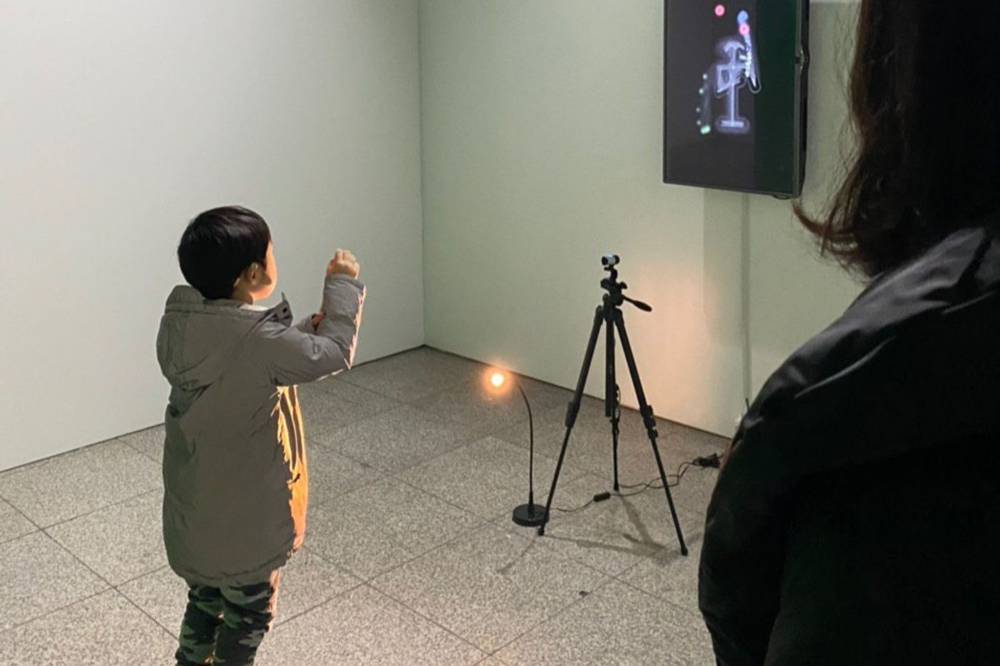
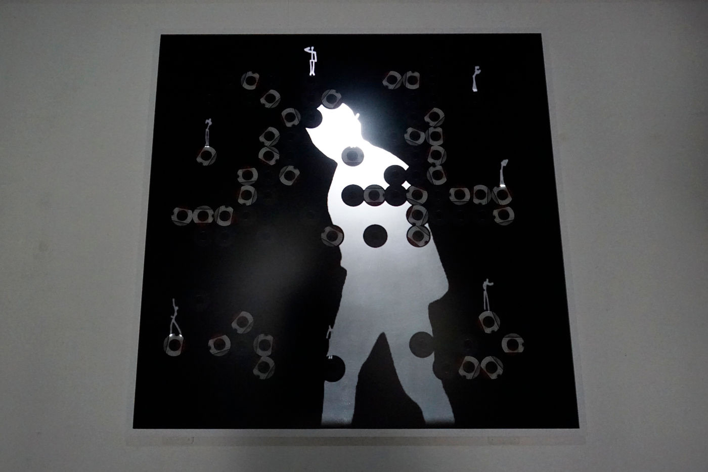
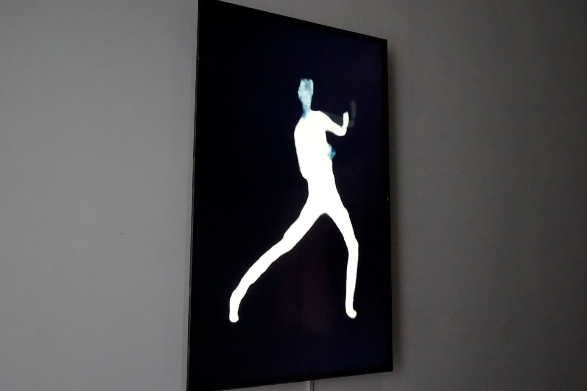
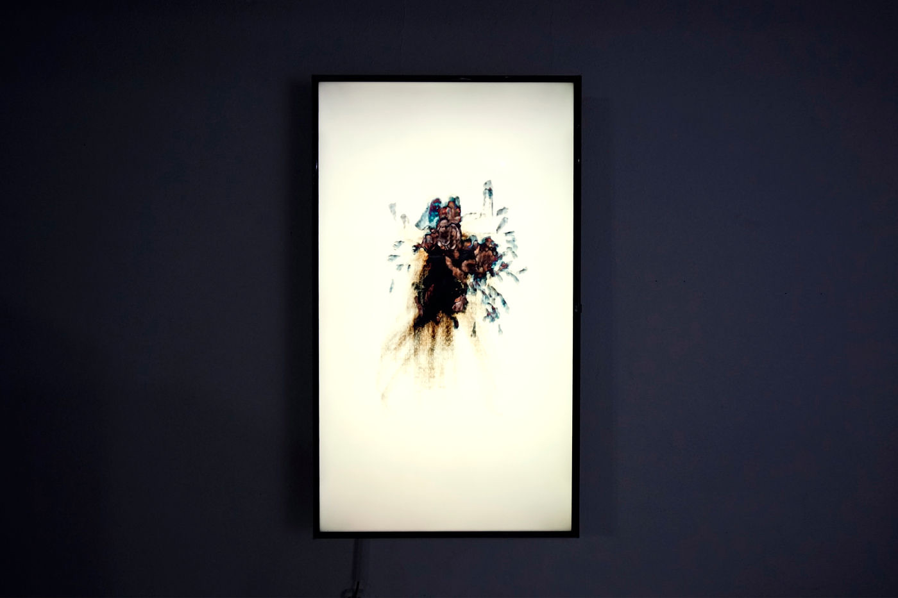

Solo Exhibition — 2020
(dis)appearition
disappear(사라지다) + appear(나타나다) + apparition(환영)의 합성어 — 실재와 가상의 경계 위에 나타나고 사라지는 존재를 다루는 개인전.
A compound of disappear, appear, and apparition — a solo exhibition on beings that appear and vanish at the border of the real and the virtual.
‘(Dis)Appearition’은 disappear와 appear, 그리고 apparition(환영)이 결합된 합성어입니다. (dis)appear는 사라짐과 나타남이 중첩된 상태이며, 환영(illusion)은 가상과 실재로 구획된 경계를 넘어서는 혼종적 존재입니다. 환영이 나타나고 사라지는 현상은 모순적이면서도 실재하며, 우리는 실재와 가상의 무의미한 경계 위에서 A.I.를 하나의 환영적 대상으로 보게 (혹은 보지 못하게) 됩니다. 이 전시는 괄호 ‘( )’의 양가적인 의미를 통해 미래의 환영을 제안합니다.
‘(Dis)Appearition’ combines disappear, appear, and apparition. (dis)appear is a superposition of disappearance and appearance, and illusion is an object that takes on the hybridity of existence beyond the compartmentalized boundary of virtual and real. The exhibition proposes a future illusion through the ambivalent meaning of this parenthesis, ‘( )’.
Presented Work — Ⅰ
slss_sl|lss_sl (부제: 스테인리스 스틸)
AI, digital media, motion interface, 2020
AI, digital media, motion interface, 2020
딥러닝은 어떤 일을 하는 방법을 가르치는 대신, 결과를 보여주고 그 결과를 만들어내도록 수정해가며 가르치는 인공지능입니다. 이런 방식으로 춤을, 더 정확히는 안무를 생성하는 AI를 만들었습니다. 이 AI는 춤의 원리나 움직임이 상징하는 바에 대한 지식도, 감정도, 의지도 없습니다. 그저 일련의 움직임을 관찰하고 그것을 재현하는 법을 학습할 뿐입니다.
춤은 다른 어떤 예술보다도 가장 원초적인 표현 형식입니다. 가장 발전된, 가장 극단적인 방법을 사용해 의미 없이, 표현하고자 하는 것 없이 현상을 제시합니다. 관객이 자신의 표피를 마주할 때, 이 작업은 예술과 인간성이라는 이분법의 가장 날카로운 경계 위에서 인공지능의 영혼을 발견할 수 있는지를 묻습니다. 그것은 결코 녹슬지 않는 영혼일까요, 아니면 영혼 없는 강철일까요?
Deep learning is an AI that doesn’t teach how to do something, but instead teaches by showing results and adjusting to reproduce them — this is how an AI that generates choreography was created. It has no knowledge, emotion, or will about dance; it simply observes movement and learns to replicate it. The work asks whether the viewer can discover the soul of an artificial intelligence on the sharpest edge of the dichotomy between art and humanity — a soul that never rusts, or soulless steel?
slss_sl|lss_sl — 2020


Presented Work — Ⅱ
Tableau Vivant Series — Cosmos Ⅰ · Ⅱ
AI, digital media, archival pigment print
AI, digital media, archival pigment print
‘살아있는 그림’을 뜻하는 Tableau Vivant는 포스트-극장을 가정하며, 극장이 어디에나 있다는 전제에서 출발합니다. 사진의 인덱스성(창작과 소멸의 순간을 동시에 포착하는 성질)에 기반해 사진이라는 매체를 다루며, 카메라의 시선 속 가상의 피사체는 존재론적 미장아빔의 춤을 반복합니다. AI가 생성한 가상의 무용수는 카메라 안과 밖에 동시에 존재하는, 허구이자 잠재태입니다. (Cosmos Ⅰ, 2’30”, 1900×1300mm)
Cosmos Ⅱ는 사진을 찍는 주체와 찍히는 대상의 관계를 끊임없이 전복하고 반복하는 미장센입니다. 무한한 격자 위에서 78개의 인간의 숫자는 하나의 신의 숫자가 됩니다. 이것은 대화일까요, 대립일까요? 답을 찾지 못한 질문을 던지며 반복됩니다. (1’30”, 1400×1400mm)
Part of the Tableau Vivant series, Cosmos Ⅰ is based on the indexicality of photography — capturing moments of creation and destruction simultaneously — where an AI-generated virtual dancer exists both inside and outside the camera’s eye, repeating a dance of ontological mise en abyme. Cosmos Ⅱ subverts and repeats the relationship between the photographing subject and photographed object: on an infinite grid, 78 human numbers become one god number, asking unanswered questions.
Cosmos Ⅰ · Ⅱ — 2020


Presented Work — Ⅲ
Neorchesis Series — Ⅰ · Ⅱ
AI, single channel video, UHD display 65인치, looping
AI, single channel video, UHD display 65in, looping
주술의 시대에 춤은 마법을 거는 행위였습니다. 그리스 시대의 오르케스트라(orchestra)는 지금과는 다른 의미로 춤을 추는 장소를 뜻했고, 테멜레아(themelea)는 제단을 통해 지상과 천상을 연결했습니다. 춤은 실재와 가상의 경계를 넘나들며 허무는 행위의 반복입니다. 우리는 미래의 오르케시스(그리스 합창단의 춤 예술)를 A.I.가 추는 춤으로 상상합니다. (Neorchesis Ⅰ, 3’00”)
한 점의 미시적인 진동이 다른 점들과 연결되어 선을 이루고, 그 선의 진동은 불규칙한 움직임과 회전, 속도로 다른 선들에 영향을 미칩니다. 점과 선의 움직임은 점차 규칙성으로 수렴하며 인간의 형상과 춤을 닮아갑니다. (Neorchesis Ⅱ, 18”)
In the age of witchcraft, dancing was an act of enchantment. We imagine a future Orchesis — the Greek art of choral dance — as a dance performed by A.I., a repetition of the act of crossing and dissolving boundaries between the real and the virtual. The microscopic vibration of a point connects with other points to form a line, and the movements of dots and lines gradually converge into a form resembling human dance.
Neorchesis Ⅰ · Ⅱ — 2020

